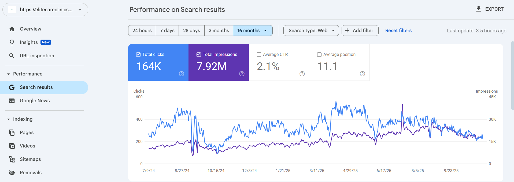

A healthcare SEO campaign focused on topic clusters, service-page optimization, technical SEO, content publishing, and local search visibility.
Organic Clicks
Search Impressions
Average Position
Target Market
Elite Care Clinics already had a website and a reasonable search presence, but the site lacked strong topical authority and consistent visibility across important healthcare and bariatric surgery keywords.
The objective was to improve rankings, expand keyword coverage, and position the website ahead of competitors in key treatment categories.
The strategy focused on building topic clusters around healthcare services while strengthening the website’s technical and on-page SEO foundation.
Content publishing was a major growth lever in this campaign. Around three articles were published each week to support service pages and strengthen topical authority.
The content strategy focused on bariatric surgery, digestive health, obesity treatment, endoscopy, and related healthcare topics.
I structured content into related topic clusters that supported both users and search engines in understanding the website's expertise.
Key pages were optimized using keyword mapping, metadata improvements, heading structure, internal links, and content expansion.
I monitored Search Console performance, indexing, and technical SEO signals to maintain healthy website visibility.
Screenshot showing Elite Care Clinics' search visibility, clicks, impressions, and ranking growth during the campaign.

The biggest achievement was helping Elite Care Clinics achieve first-page visibility across its priority healthcare services while building stronger topical authority than competing websites.
Elite Care Clinics demonstrates how topic clusters, healthcare SEO, technical optimization, and content publishing can significantly improve search visibility in competitive medical markets.
If you want to grow organic visibility, rank for high-intent keywords, and turn your website into a lead generation channel, let’s talk.